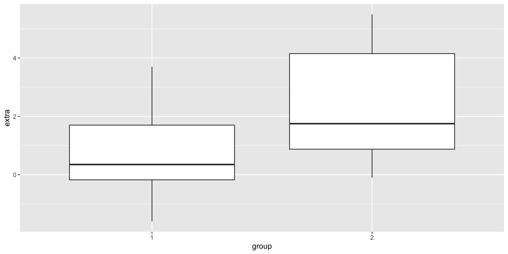

Rows: 20
Columns: 3
$ extra <dbl> 0.7, -1.6, -0.2, -1.2, -0.1, 3.4, 3.7, 0.8, 0.0, 2.0, 1.9, 0.8, …
$ group <fct> 1, 1, 1, 1, 1, 1, 1, 1, 1, 1, 2, 2, 2, 2, 2, 2, 2, 2, 2, 2
$ ID <fct> 1, 2, 3, 4, 5, 6, 7, 8, 9, 10, 1, 2, 3, 4, 5, 6, 7, 8, 9, 10ENVX1002 Statistics in Life and Environmental Sciences
The University of Sydney
Feb 2026
Where data does not meet the assumptions of parametric tests, we have two options:
Two roads diverged in a yellow wood,
And sorry I could not travel both
And be one traveler, long I stood
And looked down one as far as I could
To where it bent in the undergrowth;
– Robert Frost, The Road Not Taken, 1916
Generate a distribution of the test statistic under the null hypothesis by randomly sub-sampling the data, without replacement. Can be used to estimate a p-value.
Generate a distribution of the parameter of interest (e.g. mean) by resampling the data with replacement1. Can be used to estimate confidence intervals.
Basically, shuffle the data and see what happens.
Basically, create alternative versions of the data and see what happens.
At the core of the resampling approach is the idea that the observed data is a random sample from a larger population.
Then, if we infinitely resample from the sample itself, we should be able to somewhat approximate the distribution of the test statistic under the null hypothesis, or parameter of interest (will show example later).
To generate a distribution of the test statistic under the null hypothesis.
The sleep dataset in R contains the average extra hours of sleep, compared to control, for 10 patients who were given two different drugs.
We picked a dataset where the assumptions are met, so that we can compare the results with the parametric test.
Recall that the test statistic for the two-sample t-test is:
\[ t = \frac{Difference\ in\ the\ means}{Standard\ error\ of\ the\ difference} \]
We could calculate it manually, but let’s just use the t.test() function in R since the function calculates the test statistic for us. For example, the observed test statistic for the sleep data is:
The first step is to pool the data. The pooled data is:
[1] 0.7 -1.6 -0.2 -1.2 -0.1 3.4 3.7 0.8 0.0 2.0 1.9 0.8 1.1 0.1 -0.1
[16] 4.4 5.5 1.6 4.6 3.4Where the first 10 scores are from the first group, and the next 10 scores are from the second group.
[1] 0.7 -1.6 -0.2 -1.2 -0.1 3.4 3.7 0.8 0.0 2.0 1.9 0.8 1.1 0.1 -0.1
[16] 4.4 5.5 1.6 4.6 3.4Next, we randomly shuffle the pooled data and re-assign the first 10 scores to group 1, and the next 10 scores to group 2.
We’re not using the results from the t.test() function, but just extracting the test statistic.
Putting it all together, we can write a function to obtain the test statistic:
Repeat the function 10,000 times:
Finally, we can compare the observed test statistic to the randomised distribution. This can be done by calculating the proportion of randomised test statistics that are more extreme than the observed test statistic.
[1] 0.08If we round the p-values of both tests to two decimal places, we get:
As we can see, the p-values are very similar. This is because the assumptions of the parametric test are met, so the results will be close even though the methods are different!
We can see that the observed test statistic is well within the distribution of the randomised test statistics (which is normally distributed).
coinThe coin package in R provides a simple interface to perform randomisation tests.
Let’s use the sleep dataset to demonstrate how to use the coin package to perform a randomisation test.
To generate a distribution of the parameter of interest.
The BOD dataset in R contains the biochemical oxygen demand (mg/L) measurements of 6 samples over time.
From the pooled original data:
We sample() with replacement:
[1] 15.6 8.3 8.3 8.3 16.0 8.3Noting that some scores will be repeated, and some will be missing.
The parameter of interest is the mean value.
Since it’s a simple process, we can write a function to calculate the mean:
Then repeat the function 10,000 times:
The 95% CI is calculated from the simulated distribution:
Putting it together, the mean is 14.85131 with a 95% CI of [11.25, 18.13].
If we use the t.test() function to calculate the 95% CI:
| Method | Mean | 95% CI | CI size |
|---|---|---|---|
| Bootstrap | 14.85 | [11.25, 18.13] | 6.88 |
| Parametric | 14.83 | [9.97, 19.69] | 9.72 |
bootThe boot package in R provides a simple interface to perform bootstrap tests.
Let’s use the BOD dataset to demonstrate how to use the boot package to perform a bootstrap test.
ORDINARY NONPARAMETRIC BOOTSTRAP
Call:
boot(data = BOD$demand, statistic = boot_mean, R = 10000)
Bootstrap Statistics :
original bias std. error
t1* 14.83333 -0.010455 1.72223BOOTSTRAP CONFIDENCE INTERVAL CALCULATIONS
Based on 10000 bootstrap replicates
CALL :
boot.ci(boot.out = boot_test, type = c("perc"))
Intervals :
Level Percentile
95% (11.40, 18.13 )
Calculations and Intervals on Original ScaleTLDR
The general trend in modern statistics is to use resampling techniques over traditional methods, even when the assumptions are met – and this is currently led by the tidymodels framework in R.
inferLet’s use the sleep dataset to demonstrate how to use the infer package to perform a randomisation test (also makes it easier to compare against manual method).
The infer package requires the user to use an expressive grammar to specify the analysis.
specify() the response variable of interest, thenhypothesise() the null hypothesis, thengenerate() the null distribution, and finallycalculate() the p-value.inferFirst we need to calculate the observed test statistic so that we can compare it to the simulated distribution.
Response: extra (numeric)
Explanatory: group (factor)
# A tibble: 1 × 1
stat
<dbl>
1 -1.58Then we generate the null distribution and calculate the p-value:
| Method | P-value |
|---|---|
| Manual | 0.082 |
infer |
0.084 |
t.test() |
0.079 |
As we can see, the results are very similar because the assumptions of the parametric test were already met.
Note
To calculate confidence intervals, use the get_ci() function as documented here.
The beetle dataset was used in last week’s lecture to demonstrate the non-parametric Wilcoxon rank-sum test.
Recall that the data does not meet the assumptions of normality:
p1 <- ggplot(beetle, aes(x = BEETLES)) +
geom_histogram(bins = 14, position = "dodge") +
facet_wrap(~SIZE, ncol = 1)
p2 <- ggplot(beetle, aes(x = SIZE, y = BEETLES)) +
geom_boxplot()
p3 <- ggplot(beetle, aes(sample = BEETLES)) +
stat_qq() +
stat_qq_line() +
facet_wrap(~SIZE, ncol = 1)
library(patchwork)
p1 + p2 + p3inferFirst, calculate the test statistic:
Then generate the null distribution and calculate the p-value:
# A tibble: 1 × 1
p_value
<dbl>
1 0.025Let’s compare the p-values from
infer randomisation test.| Method | P-value |
|---|---|
| T-test | 0.037 |
| Wilcoxon | 0.075 |
infer |
0.025 |
The results of the randomisation test can be reported as follows:
Beetle consumption was significantly different between small and large beetles (t = 2.19, R = 10000, p = 0.025).
This presentation is based on the SOLES Quarto reveal.js template and is licensed under a Creative Commons Attribution 4.0 International License.